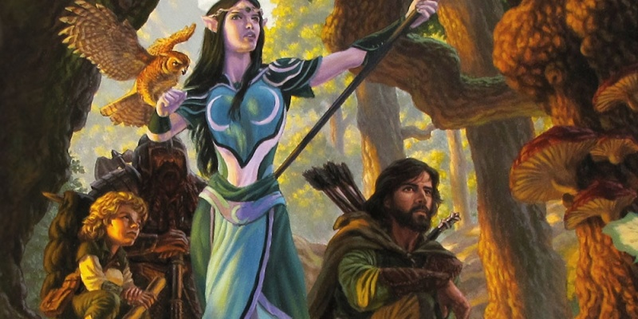

Sage Advice : Capacités raciales
Le trait de Transe permet-il à un elfe de terminer un repos long en 4 heures ?
Si un elfe médite durant un repos long (comme décrit dans le trait Transe), l'elfe termine le repos au bout de seulement 4 heures. Un elfe qui médite suit toutefois toutes les règles du repos long ; seule la durée est modifiée.
La capacité raciale des halfelins pied-léger et des elfes des bois qui permet de se cacher permet-elle de le faire s'ils sont observés ?
La capacité des halfelins pied-léger et des elfes des bois (Discrétion naturelle et Cachette naturelle) permet aux membres de ces races d'essayer de sa cacher dans certaines circonstances même s'ils sont observés. Normalement, vous ne pouvez pas vous cacher de quelqu'un s'il vous voit parfaitement. Un halfelin pied-léger, cependant, peut essayer de disparaître derrière une créature qui est au moins une taille plus grande que lui, et un elfe de bois peut essayer de se cacher simplement s'il y a une forte pluie, du brouillard, de la neige qui tombe, des feuillages, ou autres phénomènes naturels similaires. C'est comme si la nature elle-même dissimulait un elfe de bois des regards indiscrets, alors que ce regard est fixé droit sur l'elfe ! Ces deux sous-races sont capables de se cacher dans des situations inaccessibles à la plupart des autres créatures, mais leur tentative de dissimulation n'est pas assurée de succès ; un jet de Dextérité (Discrétion) normal est demandé, et un ennemi attentif pourrait plus tard repérer un halfelin ou un elfe caché : « Je te vois derrière ce garde, rusé halfelin ! ».
Un ensorceleur drakéide avec une lignée draconique peut-il avoir deux types d'Ascendance draconique différents ?
Un ensorceleur drakéide peut choisir un ancêtre différent pour le trait racial et la capacité Ancêtre dragon. Le choix pour le trait racial est votre ancêtre actuel, tandis que le choix pour la capacité de classe pourrait être votre ancêtre au sens figuré, le type de dragon qui vous a conféré à vous ou à votre famille vos pouvoirs magiques, ou le type d'artéfact draconique ou de lieu qui vous a rempli d'énergie magique.
Combien de temps durent les points de vie temporaires d'un féral ?
Sauf indication contraire d'une capacité, les points de vie temporaires durent jusqu'à ce que vous finissiez un repos long (PH, 198).
Est-ce que toutes les ténèbres magiques bloquent la vision dans le noir ?
Les ténèbres magiques bloquent la vision dans le noir uniquement si les règles de ces ténèbres en particulier l'indiquent. Par exemple, le sort ténèbres spécifie qu'il produit des ténèbres magiques qui obstruent la vision dans le noir. Cette obstruction est une caractéristique du sort, pas des ténèbres magiques en général.

Traduction du Sage Advice Compendium v2.5